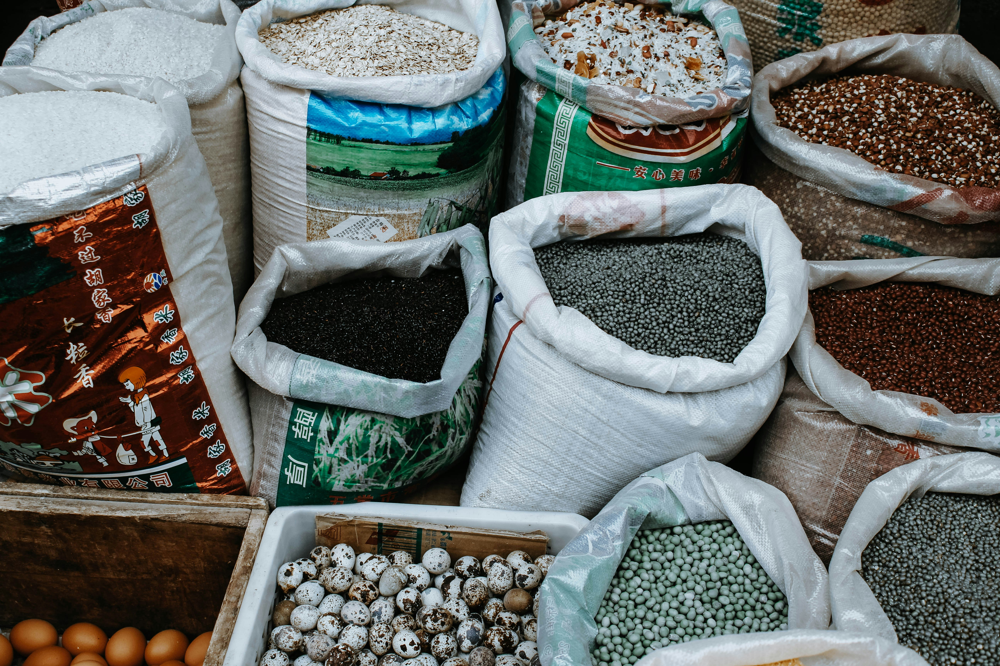
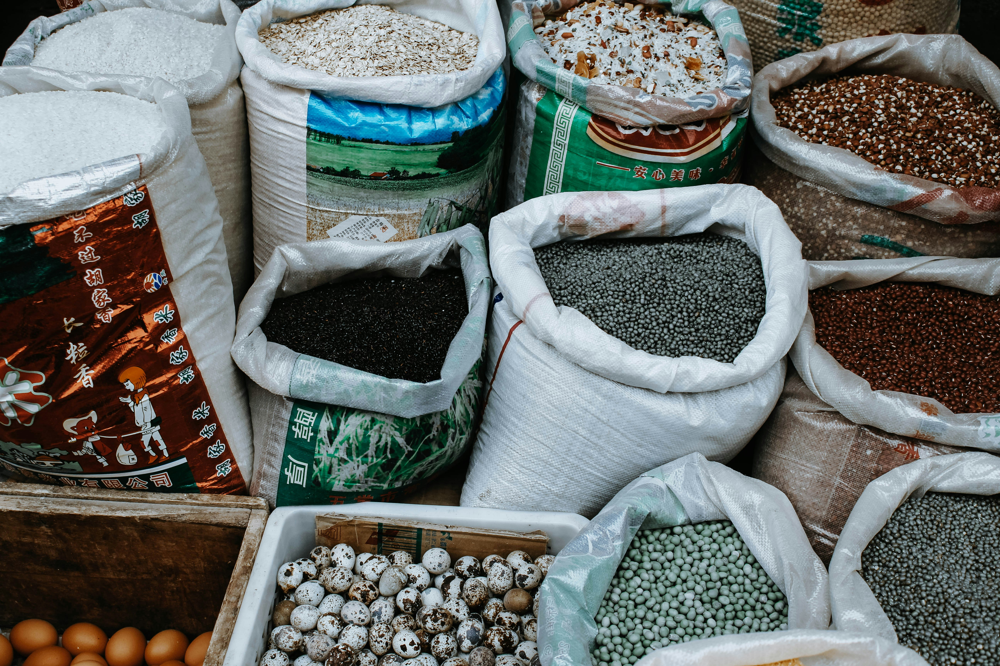

About Us
Welcome to Culinary Creations,your ultimate destination for everything food-related!

Founded by Olivia, our blog is a celebration of the rich, diverse world of culinary arts. Here, we believe food is more than just sustenance—it’s a way to connect with cultures, ignite creativity, and create lasting memories.
At Culinary Creations, we’re dedicated to exploring the stories, traditions, and flavors that shape the global food scene. From the spices that transform everyday dishes to the hidden cultural gems behind beloved recipes, our blog takes you on a journey that’s as much about discovery as it is about cooking. Whether you're a seasoned chef or a beginner in the kitchen, we’ve got something for everyone.
Join us as we explore new flavors, discover tips to make simple meals extraordinary, and dive into the magic that food brings to our lives. Olivia, your guide and fellow food lover, invites you to explore and share in the adventure of cooking, tasting, and celebrating food.
Let's cook, share, and create delicious memories together. Welcome to the world of Culinary Creations,—let's make every meal a masterpiece!